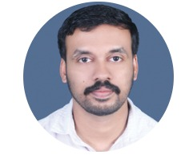
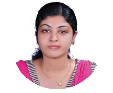

 PROF. REJIN RASSISTANTWorked as Assistant Professor in IT (Ad-hoc) in Government Engineering College Idukki from 2015 to 2018 Worked in ICT Academy of Kerala as Knowledge officer in 2019 Currently working as Assistant Professor in Department of Information Technology, Government Engineering College Idukki from 17-Oct 2019 till date
DR.VIJAYANAND K SPROFESSOR AND HEADDedicated academic with more than 20 years of teaching experience in Information Technology. Served in reputed Government Engineering Colleges across Kerala in various roles from Lecturer to Professor. Currently Professor at Government Engineering College, Idukki, with strong expertise in teaching, research, mentoring, and contributing to academic excellence and growth.
PROF. RATHEES T KASSISTANT PROFESSOR20 years of teaching experience.Working as Assistant Professor in Department of Information Technology in Government Engineering College Idukki for 20 years till date.Very good experience in teaching and strong expertise in teaching, research, mentoring, and contributing to academic excellence and growth.
PROF. SHAFEENAASSISTANT PROFESSOROver 11 years of teaching experience, including five years at Government Engineering College, Idukki (2008–2013) and six years at Model Polytechnic College, Painavu (2017–2023), specializing in technical education.Currently working as Assistant Professor in Department of Information Technology, Government Engineering College Idukki.
 PROF. NAVEENA JOSEASSISTANT PROFESSORCurrently working as Assistant Professor in Department of Information Technology in Government Engineering College Idukki.And have a strong expertise in teaching, research, mentoring, and contributing to academic excellence and growth.